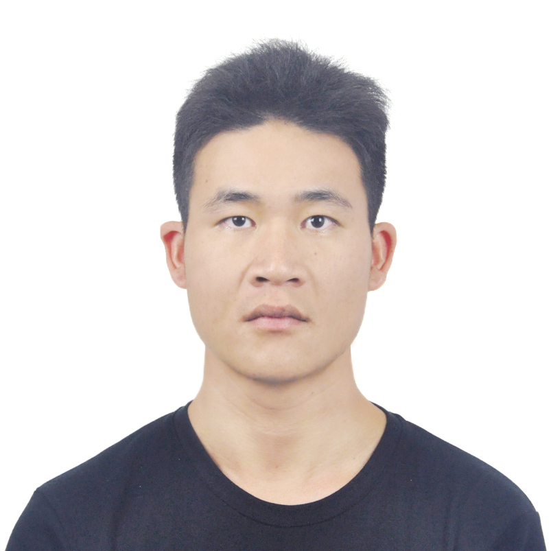

|  |
Currently, I am a research engineer on natural language processing at Shanghai Artificial Intelligence Laboratory. Previously, I worked as a researcher at Bytedance AI Lab. I also interned at Google AI China Center, working on neural machine translation. Before that, I spent 7 years at Fudan University pursuing my bachelor and master degrees, under the supervision by Prof. Xiaoqing Zheng. My research interests focus on fundamental problems of natural language generation and representation learning. We are looking for full-time employee and interns as research engineers and scientists. If you are interested, feel free to drop me an email. Email: fengjiangtao@pjlab.org.cn, fengjt16@fudan.edu.cn |